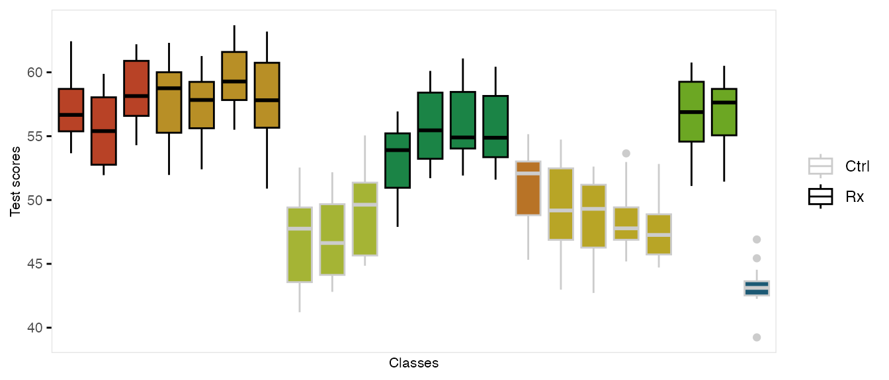

The function genCluster generates multilevel or
clustered data based on a previously generated data set that is one
“level” up from the clustered data. For example, if there is a data set
that contains the school level (considered here to be level 2),
classrooms (level 1) can be generated. And then, students (now level 1)
can be generated within classrooms (now level 2)
In the example here, we do in fact generate school-, class-, and student-level data. There are eight schools, four of which are randomized to receive an intervention. The number of classes per school varies, as does the number of students per class. (It is straightforward to generate fully balanced data by using constant values.) The outcome of interest is a test score, which is influenced by gender and the intervention. In addition, test scores vary by schools, and by classrooms, so the simulation provides random effects at each of these levels.
We start by defining the school level data:
gen.school <- defData(varname = "s0", dist = "normal", formula = 0, variance = 3,
id = "idSchool")
gen.school <- defData(gen.school, varname = "nClasses", dist = "noZeroPoisson", formula = 3)
set.seed(282721)
dtSchool <- genData(8, gen.school)
dtSchool <- trtAssign(dtSchool, n = 2)
dtSchool## idSchool s0 nClasses trtGrp
## 1: 1 0.9732297 3 1
## 2: 2 3.5741932 4 1
## 3: 3 0.1121028 3 0
## 4: 4 0.5147236 4 1
## 5: 5 0.4594058 1 0
## 6: 6 -0.1287554 4 0
## 7: 7 2.4400170 2 1
## 8: 8 -1.2496060 1 0The classroom level data are generated with a call to
genCluster, and then school level data is added by a call
to addColumns:
gen.class <- defDataAdd(varname = "c0", dist = "normal", formula = 0, variance = 2)
gen.class <- defDataAdd(gen.class, varname = "nStudents", dist = "noZeroPoisson",
formula = 20)
dtClass <- genCluster(dtSchool, "idSchool", numIndsVar = "nClasses", level1ID = "idClass")
dtClass <- addColumns(gen.class, dtClass)
head(dtClass, 10)## idSchool s0 nClasses trtGrp idClass c0 nStudents
## 1: 1 0.9732297 3 1 1 1.62726560 16
## 2: 1 0.9732297 3 1 2 -0.69640102 16
## 3: 1 0.9732297 3 1 3 1.53921338 13
## 4: 2 3.5741932 4 1 4 -1.58765603 30
## 5: 2 3.5741932 4 1 5 -2.35483046 26
## 6: 2 3.5741932 4 1 6 0.45956895 20
## 7: 2 3.5741932 4 1 7 -0.88401500 26
## 8: 3 0.1121028 3 0 8 -1.46100446 19
## 9: 3 0.1121028 3 0 9 0.07024057 19
## 10: 3 0.1121028 3 0 10 1.09465368 21Finally, the student level data are added using the same process:
gen.student <- defDataAdd(varname = "Male", dist = "binary",
formula = 0.5)
gen.student <- defDataAdd(gen.student, varname = "age", dist = "uniform",
formula = "9.5; 10.5")
gen.student <- defDataAdd(gen.student, varname = "test", dist = "normal",
formula = "50 - 5*Male + s0 + c0 + 8 * trtGrp", variance = 2)
dtStudent <- genCluster(dtClass, cLevelVar = "idClass", numIndsVar = "nStudents",
level1ID = "idChild")
dtStudent <- addColumns(gen.student, dtStudent)This is what the clustered data look like. Each classroom is represented by a box, and each school is represented by a color. The intervention group is highlighted by dark outlines:
## Warning: The `guide` argument in `scale_*()` cannot be `FALSE`. This was deprecated in
## ggplot2 3.3.4.
## ℹ Please use "none" instead.
## This warning is displayed once every 8 hours.
## Call `lifecycle::last_lifecycle_warnings()` to see where this warning was
## generated.
It could be helpful to relax the assumption of exactly balanced cluster size when estimating statistical power using simulation. There is a “distribution” called clusterSize that facilitates these stochastic cluster sizes. As part of data definitions, you can specify the overall sample size N in the formula argument, and a dispersion parameter (in the variance field) Indicating a dispersion of 0 (the default) implies exact balance, and larger values of dispersion imply more variability in the cluster sizes.
Here are two examples with exact or close to exact balance:
d1 <- defData(varname = "clustSize", formula = 120, dist = "clusterSize")
genData(8, d1, id = "site")## site clustSize
## 1: 1 15
## 2: 2 15
## 3: 3 15
## 4: 4 15
## 5: 5 15
## 6: 6 15
## 7: 7 15
## 8: 8 15
genData(7, d1, id = "site")## site clustSize
## 1: 1 17
## 2: 2 17
## 3: 3 17
## 4: 4 17
## 5: 5 17
## 6: 6 18
## 7: 7 17This is a second example with variability across sites:
d1 <- defData(varname = "clustSize", formula = 120,
variance = .1, dist = "clusterSize")
genData(8, d1, id = "site")## site clustSize
## 1: 1 22
## 2: 2 15
## 3: 3 15
## 4: 4 11
## 5: 5 11
## 6: 6 11
## 7: 7 17
## 8: 8 18